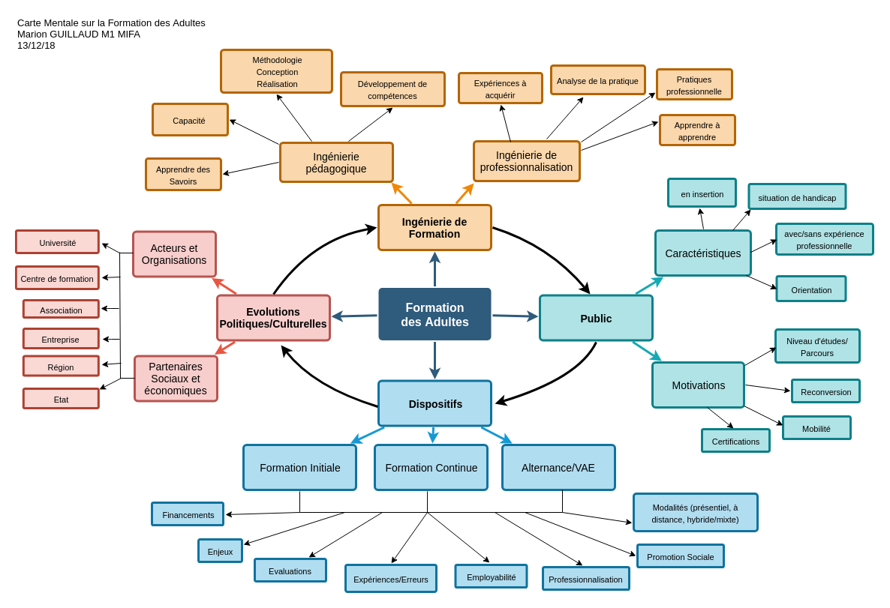

Etant intéressée par le métier de formateur dans le champ de la petite enfance, le choix de ce master s’est fait après mûre réflexion suite à un bilan de potentiel, suite à des
questionnements sur ma pratique professionnelle en tant qu’Éducatrice de jeunes enfants depuis 9 ans et mon activité de responsable d’un établissement d’accueil de jeunes enfants depuis 3 ans. Il a fallu adopter une nouvelle posture, celle de l’apprenant, du formé et non plus de l’encadrant. Ce qui ne s'est pas fait sans mal.
Quelle est ma place? Quelle est mon projet? Comment me positionner vis à vis des étudiants du groupe? Comment transmettre mes savoirs professionnels?
Pour autant, une remise en question a été nécessaire afin d’être en capacité d’écouter, comprendre, réfléchir, se questionner et articuler les différents intitulés des cours.
Master 1ère année Sciences de l'éducation
option Métiers de l'Intervention en Formation d'Adultes
Ces items de formation présentent les compétences que j'ai pu construire, les expériences vécues au travers de mes rendus, les connaissances que j'ai acquises, durant cette première année de Master. Il s'agit avant tout, via ce Porfolio, de faire un retour réflexif sur mon parcours réalisé au cours de cette formation. Certaines notions et méthodes travaillées m'étaient inconnues tandis que d'autres faisaient échos à ma pratique professionnelle et mon expérience récente de formatrice vacataire dans un centre de formation continue.
Les images choisies pour les sections suivantes correspondent à des métaphores de mes représentations principales des cours ou à des réalisations personnelles.

Implication professionnelle
L'activité de l'adulte en formation, analyse de l'activité, analyse de pratiques, posture réflexive.
J'ai pu, au regard de mon expérience professionnelle et des recherches effectuées sur le sujet, mieux aborder cette implication professionnelle ainsi que tous les enjeux de l'analyse réflexive. Il ne s'agit pas simplement de comprendre ce que nous faisons mais aussi de comprendre comment nous le faisons afin de réajuster ou améliorer notre pratique. Analyser son activité et sa pratique se traduisent aussi par une prise de recul, une remise en question sur son activité et sur soi-même. Les liens qui sont fait doivent avoir du sens afin de permettre au professionnel de construire son identité professionnelle ou du moins d'être dans une logique de professionnalisation.

Recherche et posture critique
Concepts de la professionnalisation, d'alternance,Ingénierie de formation, problématique de recherche.
Être en formation dans les métiers de l'intervention en formation d'Adultes implique de se familiariser avec le champ de la recherche sur cette formation. Les méthodologies appliquées nous incitaient à savoir poser les "bonnes questions" et effectuer des veilles sur le sujet. Réaliser une carte mentale m'a permis de représenter ma vision sur la thématique de la formation des adultes. Il a fallu aussi pousser ma réflexion sur mon questionnement du lien entre théorie et pratique dans la formation professionnelle lors des échanges en groupe de recherche.

Savoirs
Insertion sociale/professionnelle, évolutions rapport travail/formation, processus de professionnalisation.
A travers les différents environnement professionnels observés, que ce soit dans le champ de l'insertion socio-professionnelle des jeunes ou avec un professionnel en activité, il s’agit de réfléchir au prescriptif en tenant compte des conditions de la réalité de terrain. Le rapport travail/formation est en constante évolution. Ma "boîte à outils" se remplit de "pratiques" en lien avec mon projet personnel pour ma prochaine (ré)insertion professionnelle.

Humanités numériques
Formation et numérique, interactions avec l'adulte en formation, outil et artefact, hybridation, enseignement à distance, Sociologie des usages.
A travers les différentes expériences de travail à distance effecutées cette année, je me pose encore de questions telles que: Devons-nous impérativement l'insérer dans tous les dispositifs de formation? Faut-il faire comme le veut la norme? Les avantages sont-ils si bénéfiques pour les formés? Comment s'adapter à un public réticent? Ce rapport au "numérique" m'interroge sur la qualité des relations. Est-ce la société qui les influcence ou les individus à travers les usages qu'ils en font?

Spécialisations
Liens entre Territoire et formation, travail d'enquête, méthodes d'intervention, geste professionnel, approche sémiologique et multidimensionnelle.
Le multi-agenda de Dominique Bucheton incite à se confronter à la situation de travail, pour comprendre les gestes et postures professionnels. Il est question d'analyser le grain fin de l'activité tant dans le domaine du verbal que du non verbal (gestes, paroles, attitudes...). Les études de cas ont permis aussi de faire face à la "réalité du terrain", d'apprendre à établir un diagnostic, à répondre à un appel d'offres, de se positionner comme un organisme de formation, le tout en lien avec un territoire.

Stages
Observation d'un terrain professionnel, observation d'un dispositif de formation, d'une activité professionnelle hors du champ de la formation, questionner, rechercher.
Ce cairn représente pour moi le cheminement à effectuer dans le cadre d'un stage. Qu'ils soient ou non professionnalisant, les terrains d'obervation m'ont permis de prendre du recul et de pouvoir mieux comprendre les tensions et interactions qui pouvaient avoir lieu et aussi de trouver son équilibre. Observer n'est pas un acte anodin, de même que savoir prendre sa place de stagiaire (que nous ayons ou non une expérience professionnelle). Le travail réflexif est autant perturbant que constructif.
Travaux
Vous pouvez consulter une partie de mes travaux réalisés cette année ici:
Semestre 1:
Semestre 2:
{kind=link}